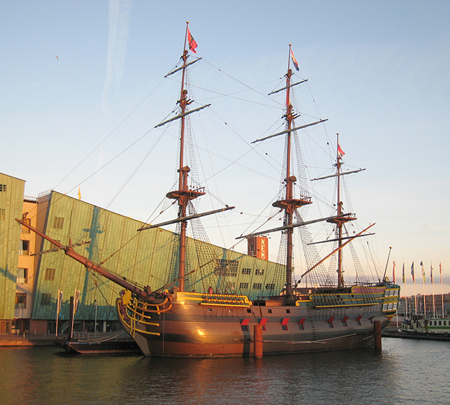

The ship was carrying 203 crew, 127 soldiers, and 5 passengers who were rescued and subsequently looked after locally before returning to the Netherlands.[3]
Various domestic goods including 27 chests of silver Dutch guilder coins went down with the ship. Some of the finds found during excavations in the 1980's are on show at the Shipwreck Museum in Hastings. The anchor can be found as an art piece at St. Katherine Docks in London.
The wreck is located opposite the Bulverhythe railway footbridge and best seen during the spring low-tides.

Replica of the VOC ship Amsterdam
Location: NEMO science centre, Amsterdam, Holland
© S Sepp